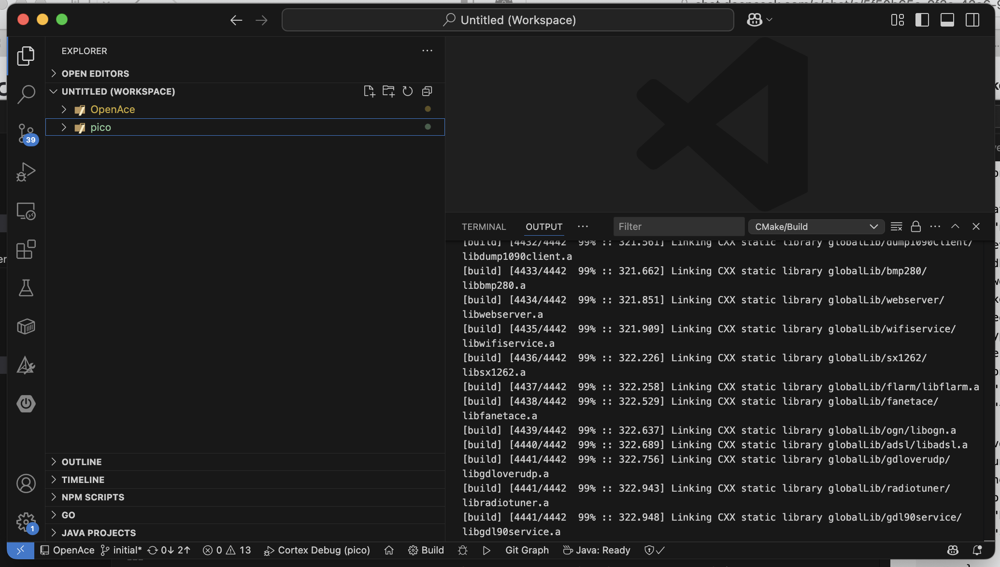
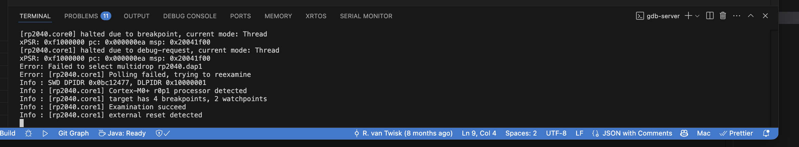
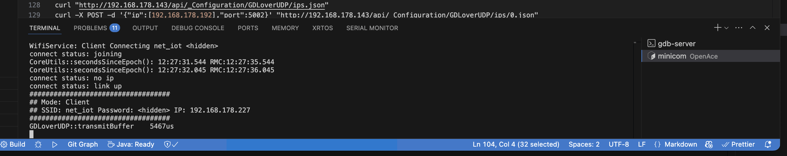

For Developers
This guide describes how to modify the GA/TAS codebase and create a new UF2 file for flashing onto the device.
For small changes or bug fixes, using the Docker container is often the easiest method. While compilation is slower and the resulting gatas.uf2 file must be manually copied to your Pico, this approach requires only Docker and no other toolchain setup. The Docker build chain is daily tested Github Action of GA/TAS
🚨 Regardless of your build method, you must have the source repository cloned locally.
Getting the Source
Clone the repository and initialize all submodules:
Building with Docker
Step 1: Build the Docker Image
From the src directory:
Step 2: Build the Firmware
Still within the src directory:
docker run --rm -e PICO_PLATFORM=rp2350 -e PICO_BOARD=pico2_w -e BUILDER_DIR_NAME=docker_release_rp2350 -v $(pwd):/opt/src --entrypoint /build-entrypoint.sh gatas-build-image-2.1.1-up
The first build may take a while, but subsequent builds will be significantly faster since Docker caches the build environment and reuses compiled modules. In addition only changed sourcesfiles will be compiled.
The resulting uf2 can be found in: src/pico/release_build_docker/gatas.uf2
Setting Up a Native Development Environment (macOS)
⚠️ This setup has not been tested recently. Please report any issues you encounter.
References
SDK Installation
Assume all installations are done in /opt/pico:
Add to your shell profile (e.g., .zshrc or .bash_profile):
FreeRTOS
Add to shell profile:
Toolchain
Do not use Homebrew. Instead:
- Download from Arm GNU Toolchain
- Install to
/Applications/ARM - Update shell profile:
The Toolchain is daily tested in github: Github Action of GA/TAS
Visual Studio Code Setup
- Install CMake Tools extension.
- Open the
rootfolder in VSC by using 'Add Folder To Workspace' - Open the
src/picofolder in VSC 'Add Folder To Workspace' - Allow VSC to configure the project.
- Choose the
GCC for arm-none-eabikit when asked
Debugging with OpenOCD
- Install from xPack OpenOCD Releases
- Avoid Homebrew versions
I installed it under: /opt/pico/openocd
VSCode Launch Configuration
In .vscode/launch.json:
{
"name": "Pico Debug",
"type": "cortex-debug",
"request": "launch",
"servertype": "openocd",
"device": "RP2040",
"cwd": "${workspaceRoot}",
"executable": "${command:cmake.launchTargetPath}",
"gdbPath": "arm-none-eabi-gdb",
"configFiles": [
"interface/cmsis-dap.cfg",
"target/rp2040.cfg"
],
"svdFile": "${env:PICO_SDK_PATH}/src/rp2040/hardware_regs/rp2040.svd",
"runToEntryPoint": "",
"showDevDebugOutput": "raw",
"postRestartCommands": [
"break main",
"continue"
]
}
If you encounter adapter speed errors, add the following to /opt/pico/openocd/openocd/scripts/target/rp2040.cfg:
Opening the Project in VS Code
- Launch a new VS Code window and open the root GA/TAS directory.
- Use "Add Folder to Workspace" to include the
Picodirectory.
Your workspace should now contain the base and Pico folders.
Your screen should look like this: 
Debugging and Monitoring
To start a debug session:
- Click the debug icon in the left panel
- Select Pico Debug configuration
- Click the green play icon
If everything is set up correctly, GDB and OpenOCD will start, flash your firmware, and begin debugging.

To monitor GA/TAS output via serial:

Replace the device path as needed.